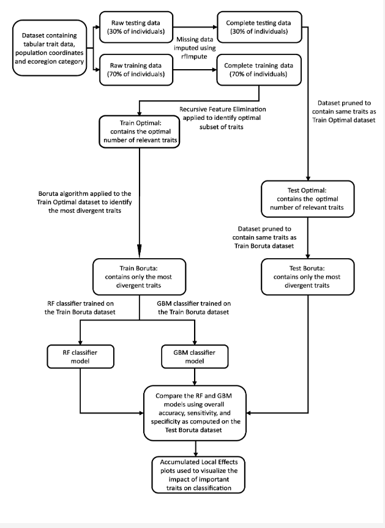
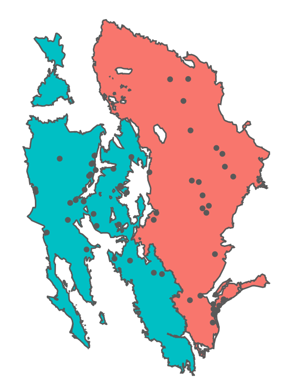

1. Introduction
- Background:
Intraspecific functional trait divergence is a pivotal aspect of plant ecology. Understanding the underlying mechanisms of trait variation is crucial to anticipate plant responses to environmental alterations. However, exploring the relationships between functional traits and environmental factors becomes challenging, especially with large datasets. This project endeavors to address this challenge by applying eXplainable Artificial Intelligence (XAI) techniques to assess intraspecific trait variations, specifically in the diverse genotypes of Helianthus annuus, a widely distributed sunflower species.
.jpg)
Image by Dr. Chase Mason
2. Problem Statement
- The primary goal is to identify the functional traits that are most predictive of ecoregion origin, hence providing insights into intraspecific functional trait divergence using interpretable machine learning methods.
3. Data
- Study Area and Data Sources:
- The data for this study is centered around genotypes of Helianthus annuus derived from the HeliantHome database. Specifically, genotypes within the Level I ecoregions of the Great Plains and North American Deserts were used due to their significant population of H. annuus, in contrast to other ecoregions with scant populations rendering them statistically insignificant for analysis. The extraction process was facilitated by cross-referencing the geographic coordinates of each source population with a shapefile of Level I ecoregions obtained from the United States Environmental Protection Agency
- Data Preparation:
This data illuminates a wide array of traits reflecting plant architecture, reproductive phenology, tissue chemistry, and morphology of multiple plant components, with trait values associated to one or more genotypes within each population. Utilizing R packages such as sf, jsonlite, and the tidyverse suite of packages, a combined dataset was generated encapsulating population coordinates, the categorical ecoregion assignment, the genotypes within these populations, and the corresponding functional trait data for each genotype. The dataset comprised 88 traits from 464 genotypes belonging to 49 populations.
An initial examination of the dataset was conducted to ascertain the percentage of missing values for each trait. One trait, the peduncle length of the first flower, which had 100% missing values, was eliminated from the dataset. The rest exhibited missing values at a rate of either 27% (seed traits), or <5% (all other traits). Following this, the dataset, now housing 87 traits, was randomly segregated into a training dataset (70% of the data) and a testing dataset (30% of the data) to evaluate the predictive models on unseen data.
Imputation of missing data values was executed separately on the training and testing data using the proximity matrix from a Random Forest (RF) algorithm through the R package randomForest, ensuring no data leakage occurred. The data was then subjected to Recursive Feature Elimination (RFE) on the training data to pinpoint the optimal subset of relevant traits. Post RFE, the Boruta algorithm was applied on the ‘Train optimal’ dataset to identify the most divergent traits, which were then used to train and evaluate two classifiers, Random Forest (RF) and Gradient Boosting Machine (GBM), on separate datasets dubbed ‘Train Boruta’ and ‘Test Boruta’. This methodology enabled the validation of the findings of RFE and Boruta, and facilitated an understanding of how well these identified traits predict ecoregion origin, thereby reflecting phenotypic divergence between populations from contrasting environments. Accumulated Local Effects (ALE) plots were employed to evaluate the specific impact on prediction probability of variation in trait values for each of the eight most important traits.

Workflow diagram outlining the steps undertaken in this project
4. Exploratory Data Analysis (EDA)
Distribution of H. annuus populations as they pertain to this study with respect to the ecoregions they inhabit

5. Explainable AI and modeling methodologies
- Two feature selection techniques, Recursive Feature Elimination and Boruta, were employed to identify the most predictive functional traits of ecoregion. Subsequently, a Random Forest and a Gradient Boosting Machine were trained using the selected traits. The results were interpreted using accumulated local effects plots, facilitating an easy comprehension of the machine learning models.
6. Main Results
Important Predictors:
- The analysis unveiled that the most ecoregion-predictive functional traits pertained to leaf economics, plant architecture, reproductive phenology, and floral and seed morphology.

Distinct characteristics between the two populations:
Specifically, genotypes from the North American Deserts exhibited shorter stature, fewer leaves, higher leaf nitrogen, and longer average length of phyllaries compared to those from the Great Plains.

7. Conclusions
The methodology presented herein furnishes a useful tool for investigating intraspecific functional trait divergence, especially in large datasets. It helps in predicting plant responses to environmental changes, shedding light on contrasting ecological strategies across different landscapes. The approach also holds potential for testing the applicability of interspecific paradigms at intraspecific scales.
8. Code
The code for this analysis can be accessible in the project GitHub repository
9. Application
- Shiny App:
- The Shiny app, accessible here, exhibits the main results of this study. The code for the app is available in the GitHub repo.
10. Reference
Bercovich N, N Genze, M Todesco, GL Owens, J-S Légaré, K Huang, LH Rieseberg, DG Grimm 2022 HeliantHOME, a public and centralized database of phenotypic sunflower data. Sci Data 9: 735.